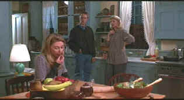

| Myth of Fingerprints/C+,A- |
| Columbia |
This is not the first time and it won't be the last time that a movie depicts a family coming together for a holiday dinner to kick the kishke out of each other. The Myth of Fingerprints is a quiet movie with a seething underbelly that erupts in several outbursts
 |
| Another family working each other over. ©Columbia |
Roy Scheider wanders around making everyone miserable. There must be secrets in his closet far beyond anything depicted in the film. Not much happens in the world of Myth of Fingerprints. Family confrontations seem almost planned. Home for the holidays here is a dirty word.
Selections from the feature archive include articles on Akira Kurosawa, Frank Darabont, Blonde Bimbos, Hollywood Street Gangs, or Vietnam: The Hollywood Pariah, and many more....

Catch the Hollywood take on Blonde Bimbos by clicking on the image above.
The Movie Poster Archive include extensive poster images from the films of stars like Susan Hayward, Kirk Douglas, Katharine Hepburn and many more. This month's featured star is Cary Grant.


Cyber Theater is an outstanding source for accurate video information. Check out their 16 x 9 format guide for a thorough understanding of DVD encoded that way.

Reliable and friendly DVD sales service has been a hallmark of Digital Eyes for more than three years. Home to Robert (Obi) George's DVD reviews.

DVD Demystified makes it all clear.The official Internet DVD FAQ for the rec.video.dvd Usenet newsgroups.

DVDinsider is a daily email publication targeting the DVD Industry Professional. The publication includes current news, events, stock prices and more.